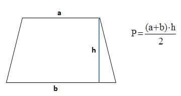

Zadanie 1
Zdefiniuj zmienne przechowujące długości podstaw oraz wysokość trapezu. Oblicz pole figury, a następnie wyprowadź wyniki na ekran.
 Więcej o zmiennych w JavaScript Więcej o zmiennych tworzonych przy pomocy słowa kluczowego let w JavaScript